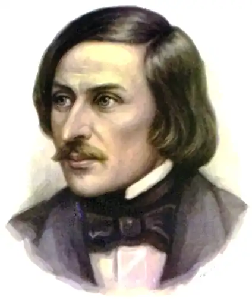

Гоголь Микола Васильович
(1809-1852)
письменник, драматург Народився Микола Васильович Гоголь 20 березня 1809 року в селі Великі Сорочинці (тепер Миргородського району) на Полтавщині. Батько його був праправнуком полковника козацького війська часів Богдана Хмельницького Остапа Гоголя. Пізніше знаменитий нащадок звеличить його до легендарної постаті й оспіває в образі Тараса Бульби. Дитинство майбутнього письменника минуло в с. Василівці (тепер Гоголеве) в маєтку батьків. З 1818 по 1819 р. навчався в Полтавському повітовому училищі, а з 1821 по 1828 р. — у Ніжинській гімназії вищих наук. Мовно-музична культура рідної землі знаходила свій вияв у виховній практиці бабусі Тетяни Семенівни, маминої мами. Любов до мови, відчуття слова закладалися у юного Миколи Гоголя уже з дитячих літ. Згодом він захопиться збиранням українських народних пісень, прислів’їв та приказок, готуватиме матеріали до українсько-російського словника. Пізніше він так писав про українську пісню: "Якби наш край не мав такої скарбниці пісень, я б ніколи не зрозумів історії його, тому що не збагнув би минулого..." "Моя радість, життя моє! Як я вас люблю! Що всі холодні літописи, в яких я тепер риюся, перед цими дзвінкими, живими літописами! Як мені допомагають в історії пісні!.." "Це народна історія, жива, яскрава, барвиста, правдива, що розкриває все життя народу". Ще в студентські роки, глибоко переймаючись соціальними негараздами, внутрішньо противлячись найрізноманітнішим виявам зла, вболіваючи за всю державу і свою "милу Україну", М.Гоголь настроювався на таку діяльність, "щоб бути по-справжньому корисним для людства". Загалом же всю творчість великого письменника було спрямовано на "очищення серця", "розуміння серцем", щоб досягти хоч якоїсь подоби суспільної гармонії. "Я палав незгасним прагненням зробити своє життя потрібним для блага держави, я жадав принести хоча б найменшу користь. Тривожили думки, що я не зможу, що мені перепинять шлях, завдавши мені глибокого суму. Я поклявся жодної хвилини короткого життя свого не втрачати, не зробивши блага", — писав палко настроєний на самопожертву юнак. У 1828 році М.Гоголь переїжджає до Петербурга. Там у 1829 р. він публікує свій перший твір — поему "Ганц Кюхельгартен". Через рік у журналі "Отечественные записки" з’являється повість "Басаврюк, або Вечір проти Івана Купала", перша з циклу "Вечори на хуторі біля Диканьки". Романтична спрямованість, опоетизованість життя надавали творам М.Гоголя особливого колориту. Ґрунтовні знання усної народної творчості дозволяли майстру виводити картини дійсності у глибокому взаємопереплетенні з вимислом, але мовби на реальному грунті життя. Особливо привабливим був ліризм, проникливість і любов автора до зображуваного, що неминуче справляло враження на читача, захоплюючи його уяву. Туга за батьківщиною, за мальовничою Україною, змусила М.Гоголя наприкінці 1833 року клопотатися про місце професора історії в Київському університеті св. Володимира. Спонукала до цього ще й дружба з М.Максимовичем, професором-земляком, етнографом, фольклористом, істориком, ботаніком, майбутнім ректором Київського університету. "Я захоплююся заздалегідь, коли уявляю, як закиплять труди мої в Києві. Там скінчу я історію України й півдня Росії і напишу всесвітню історію. А скільки зберу там легенд, повір’їв, пісень! Якими цікавими можна зробити університетські записки, скільки можна умістити в них подробиць, цілком нових про сам край!" — переповнювався творчими планами письменник. "Туди! Туди! До Києва! Там, або навколо нього, звершалися діяння віковічності нашої... Багато можна буде зробити добра", — писав він про свої сподівання М. Максимовичу. У цей же час він працює над книгами "Арабески", "Миргород" (1835 р.). Розраду від нездійснених планів письменник шукав і знаходив у творчості. Тепер він остаточно пориває з педагогічною діяльністю. "...вже не дитячі думки, не обмежене коло моїх знань, а високі, сповнені істини й жахливої величі думки хвилювали мене". З другої половини 30-х років подальший розквіт таланту М.Гоголя пов’язаний з його драматургією. Етапною навіть в історії театру стала його соціальна комедія "Ревізор" (1836 р.) Невдовзі після прем’єри п’єси М.Гоголь виїжджає на досить тривалий час за кордон. Він відвідує Німеччину, Швейцарію, Францію, Італію. У 1842 році з’являється друком знаменита поема-роман "Мертві душі". Останні роки життя письменника сповнені драматичних пошуків себе в Істині. Прямим підтвердженням тому було видання "Вибраних місць з листування з друзями" (1847 р.). У 1848 році письменник повертається на батьківщину, посилено працює над другим томом "Мертвих душ", але незадовго перед смертю спалює рукопис. Тяжка хвороба обірвала життя неповторного майстра слова 21 лютого 1852 року. Для більшості сучасників і пізніших поціновувачів його творчості Микола Васильович Гоголь є непохитним авторитетом письменника, що дошкульною сатирою на існуючий лад забезпечив собі довічне і почесне місце серед класиків світової літератури. Це сталося завдяки ідеологічно нав’язаному і свідомо спрощеному сприйняттю його творчого доробку. Тільки останнім часом нам вдалося відкрити для себе справжнього М.Гоголя — великого мислителя, публіциста, аскета, духовного подвижника. Життя Миколи Васильовича Гоголя ще з найраніших дитячих років мало чітко визначене духовне спрямування. Середовище, в якому довелося йому зростати, було дуже сприятливим для цього. Мати, Марія Іванівна, завжди відзначалася особливою побожністю. Прадід по батьковій лінії був священиком; дід закінчив Київську духовну академію; батько — Полтавську семінарію. Поняття про Бога запали в дитячу душу і знайшли навіть не зацікавлення, а палку віру. Згодом, в одному з листів до матері, він напише: "...Благословляю тебе, священна віро! У тобі тільки я знаходжу джерело втіхи і втолюю свої печалі!.. Прилиньте так, як я прилинув до Всемогутнього". Родина Гоголів не була винятком у тогочасному українському суспільстві. У середині XVII століття Павло Алеппський, побувавши у наших краях, так описував свої враження: "По всій землі козаків ми помітили чудесну рису, що покорила нашу уяву: всі вони, за незначним винятком, навіть більшість жінок і дівчат, уміють читати і знають порядок церковних служб, церковні наспіви; окрім того, священики навчають сиріт і не лишають їх тинятися вулицями напризволяще". Тільки знаючи найголовніше, внутрішнє, визначальне спрямування творчості великого письменника, можна належно поцінувати все ним зроблене, по-новому поглянути на моральні уроки, не кажучи вже про загальне сприйняття всього масиву творчості. "Гоголь — перший пророк повернення до цілісної релігійної культури, пророк православної культури... він відчуває як основну неправду сучасності її відхід від Церкви, і основний шлях він бачить у поверненні до Церкви і перебудові всього життя в її дусі", — так важає В.Зеньковський. Уся творчість М.Гоголя, по суті, є пошуком шляхів людського вдосконалення. Якщо у своїх ранніх творах він намагався наблизити людину до Бога через виправлення її вад, викриття суспільних обставин, що провокують або спонукають до них, то пізніше він переключається на самого себе, спрямовує рушійну силу очищення на свою душу і серце, вбачаючи там причину багатьох спокус. Сам Гоголь в "Авторській сповіді" говорить про ті пошуки: "З цього часу людина і душа стали, більше ніж будь-коли, предметом спостережень. Я облишив на деякий час усе сучасне; я звернув увагу на пізнання тих вічних законів, якими живе людина і людство взагалі. Книги законодавців, душознавців і спостерігачів за природою людини стали моїм чтивом... і на цьому шляху невідчутно, майже не знаючи як, я прийшов до Христа, побачивши, що у Ньому ключ до душі людини..." Після перших тяжких нападів страшної недуги письменник ще вимогливіше почав ставитися до себе, сприймати і цінувати час. Його все більше цікавить стан його душі, готовність до вищого звіту, полонить прагнення якнайкраще і найповніше відповідати образу духовної людини. "Та хай не думають, що Гоголь мінявся у своїх переконаннях, — навпаки, з юнацьких літ він залишався їм вірним. Але Гоголь ішов постійно вперед, його християнство ставало чистішим, твердішим; високе значення мети письменника яснішим; суд над самим собою суворішим", — так писав про нього С.Аксаков. Люди, які близько знали письменника, відзначали навіть зовніш-ні зміни в його вигляді. П.Анненков, який зустрічався з ним у 1846 році в Парижі, згадував: "Гоголь постарів, але набрав особливого роду краси, яку не можна визначити інакше, окрім назвавши красою мислячої людини. Обличчя його поблідло, схудло; глибока, напружена робота думки поклала на нього ясний відбиток виснаженості і втоми, але загальний вираз його здався мені якимось світлішим і спокійнішим за попередній. Це було обличчя філософа". У цей час письменник багато читає. Здебільшого це книги духовного змісту: твори святих отців Церкви, історія Церкви, богословські трактати. Згодом увесь свій духовний досвід М.Гоголь втілив у один з найкращих зразків духовної прози "Роздуми про Божественну Літургію". Письменник хотів зробити це видання масовим, за найнижчою ціною, без авторства, аби воно стало доступним для найширшого загалу. Актуальні питання буття — від побутових до духовних — М.Гоголь сприймав крізь призму релігійно-морального смислу. З часом переконання його перетворилися у глибоку віру, що змінити існуючий порядок речей, який викликав часом у нього активний внутрішній спротив, можна лише змінивши людину, а не суспільний устрій. Прагнення зробити людину людиною у вищому, горньому розумінні цього слова стало для нього питанням питань. З цим пов’язані його роздуми і про поняття значно ширші, які з часом, здається, лише набувають своєї вагомості. "Суспільство утворюється само собою, суспільство складається з одиниць. Потрібно, щоб кожна одиниця виконала повинність свою... Потрібно згадати людині, що вона зовсім не матеріальна худобина, а високий громадянин високого небесного громадянства. Поки він хоч скільки-небудь не стане жити життям небесного громадянина, до того часу не прийде до порядку і земне громадянство". У цих словах, здається, сконцентровано абсолютно все, що треба знати сучасній людині про саму себе. Геніальний митець допомагав, допомагає і, безсумнівно, допомагатиме нам у справдженні цієї істини. ** Я з усіх сил намагаюся як новину сказати те, що сказав Гоголь. /**Л.Толстой.**/